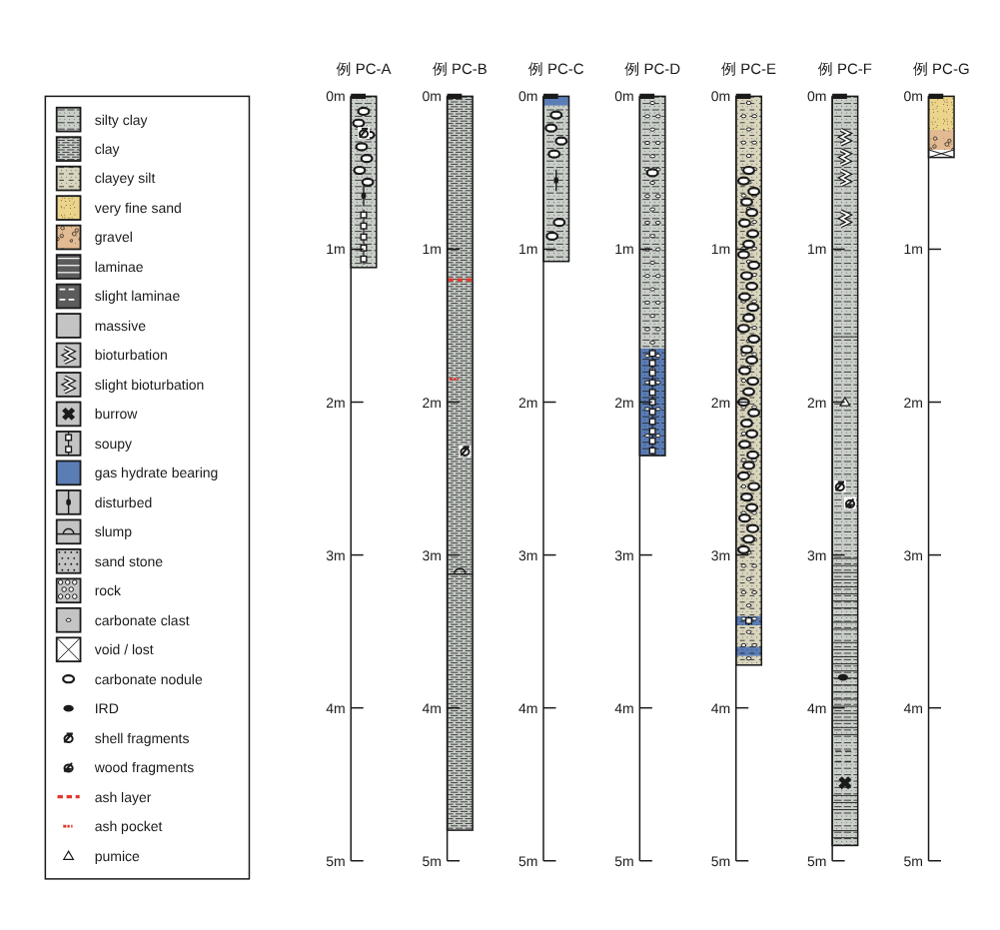
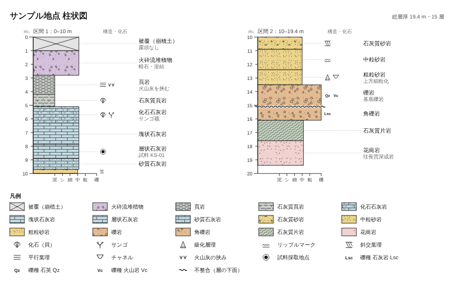

柱状図ツールの使い方
Excel に記載を書いて読み込むと、柱状図が描けます。インストールは不要で、ブラウザ（Chrome・Edge・Safari・Firefox）だけで動きます。
はじめに
- トップページから使うツールを開きます。コア記載なら「コア柱状図メーカー」、地層の層厚表なら「柱状図メーカー（地層）」です。
- 入力例の Excel をダウンロードして、形を確認します。 ツールの「テンプレートExcelを保存」でも、今表示しているデータを Excel に書き出せます。
- 自分のデータを Excel に書き、ツールの「ここにファイルをドロップ」に落とします（クリックして選んでも読み込めます）。
- 柄・色・大きさを調整し、PNG・SVG・Illustrator 用スクリプトで保存します。
コア柱状図メーカー
コアごとの区間記載（構造・含有物・岩相・色）から、コアを横に並べた柱状図を描きます。

Excel の書き方
1行に1つの区間か、1つの記号を書きます。1行目は見出しです。列の順番は自由で、見出しの名前で判断します。
| 見出し | 内容 | 例 |
|---|---|---|
| コア | コア名。同じコアが続く行は空欄でもかまいません（前の行のコア名を使います） | PC2601HF |
| セクション上端 | 任意。書くと「コア内の深度＝セクション上端＋上端」に換算します。記載シートのセクション内深度をそのまま書くときに使います | 280.5 |
| 上端・下端 | 区間の深度。単位は設定で cm か m を選びます。点の記号は下端を空欄にするとその深度に1つ描きます | 6.0 9.0 |
| 項目 | 構造や含有物。カンマで区切って複数書けます | gas hydrate bearing, soupy |
| 岩相 | 任意。FGDC の柄を選ぶのに使います | silty clay |
| 色 | 任意。マンセル表記。柱をこの色で塗れます | 10Y 3/2 |
| 備考 | 自由記入（図には描きません） |
「項目」に書ける言葉
区間を塗る項目と、深度に置く記号があります。日本語や記載シートの言い回しでも判定し、判定できなかった語は表の「判定」欄に赤字で出ます。
| 種類 | 書く言葉（例） |
|---|---|
| 区間を塗る | massive（塊状）、laminae（葉理）、slight laminae（弱い葉理）、bioturbation（生物擾乱）、slight bioturbation（弱い生物擾乱）、burrow（巣穴）、soupy（スーピー）、gas hydrate bearing（ガスハイドレート）、disturbed（乱れ）、slump（スランプ）、sand stone（砂岩）、rock（岩石・礫）、carbonate clast（炭酸塩クラスト）、void / lost（空隙・欠損）、flow-in（フローイン） |
| 記号を置く | carbonate nodule（炭酸塩ノジュール）、IRD、shell fragments（貝殻片）、wood fragments（木片）、ash layer（火山灰層）、ash pocket（火山灰パッチ）、pumice（軽石） |
| 言い換えの例 | weakly mottled → slight bioturbation、mottled・bioturbated → bioturbation、laminated → laminae、massive silty clay → massive |
記号を区間（上端と下端）で書くと、その区間の中に散らして描きます。ノジュールが多い区間などに使います。
岩相と色
- 岩相の柄：「岩相」列の名前から FGDC の柄を自動で選びます（silty clay → 619、clay → 620、clayey silt → 616、very fine sand → 607、volcanic ash → 711 など）。「3. 岩相ごとの柄」で名前ごとに柄と色を変えられます。
- 柱の色：「岩相ごとの色」「記載の色（マンセル値から近似）」「塗らない」から選びます。マンセル色は計算で近似した色なので、色票と完全には一致しません。
- 柱の地：「灰色」を選ぶと、岩相の柄を使わない灰色の柱になります。
描画の設定
| 設定 | 内容 |
|---|---|
| 入力の深度単位 | Excel の深度が cm か m か |
| 1 m あたりの長さ（mm） | 縦の縮尺。小さくすると図が短くなります（10 m 近いコアを A4 に収めるなら 15 mm 前後） |
| 柱の幅・コアの間隔（mm） | 柱の太さと、隣のコアとの間隔 |
| 目盛りの間隔（m） | 深度目盛りを打つ間隔 |
| 凡例 | すべて載せる／使った項目だけ／なし |
Illustrator（.ai）にする
- ツールの「Illustrator用スクリプト（.ai作成）」を押すと、
core_column.jsxが保存されます。 - Illustrator を起動し、「ファイル → スクリプト → その他のスクリプト…」で
core_column.jsxを選びます。 - 図が組み立てられたあと、保存先を聞かれるので選ぶと .ai になります。
.ai はレイヤーが「凡例」「コア名」「目盛り」「外枠」「記号」「柄」「岩相」「コア」に分かれ、各レイヤーの中はコアごとのグループになります。文字は Arial のテキスト、色は CMYK なので、あとから自由に編集できます。図形が多いと組み立てに少し時間がかかります。
Illustrator がない場合は「SVGで保存」を使ってください。SVG は Illustrator・Inkscape・PowerPoint などでも開けます。
柱状図メーカー（地層）
層ごとの岩相と層厚（または深度）の表から、指定した長さで区切った地層柱状図を描きます。

| 見出し | 内容 |
|---|---|
| 岩相 | 岩石名。名前から FGDC の柄を自動で選びます（例：泥岩、細粒砂岩、石灰質頁岩、凝灰岩） |
| 層厚 | 層の厚さ（m）。代わりに「上端」「下端」の深度、または「深度」（下端）でも読めます |
| 粒度 | 任意。泥／シルト／細粒砂／中粒砂／粗粒砂／礫。柱の幅に使います |
| 備考 | 任意。柱の右に表示します |
| 記号 | 任意。化石、サンゴ、級化、リップル、斜交葉理、平行葉理、チャネル、火山灰、試料、不整合、Lsc / Qz / Vc |
| 柄 | 任意。FGDC の番号（例：627）を書くとその柄で描きます |
「区切る長さ」を 10 m にすると、10 m ごとに柱を横に並べます。0 にすると1本の柱で描きます。行を下（古い層）から書いた場合は「1行目が最下部」を選びます。
よくある質問
保存したファイルはどこに入りますか？
ブラウザのダウンロード先（通常は「ダウンロード」フォルダ）です。
スマホでも使えますか？
表示と読み込みはできますが、画面が小さいので、PC かタブレットをおすすめします。
ネットがない場所で使いたい
このサイトの core-column.html や strata-column.html を保存しておけば、ダブルクリックで開いてオフラインでも使えます。
柄の出典は？
岩相パターンは FGDC Digital Cartographic Standard for Geologic Map Symbolization（FGDC-STD-013-2006）第37節を参考に描き直したもので、規格の図と細部は異なります。